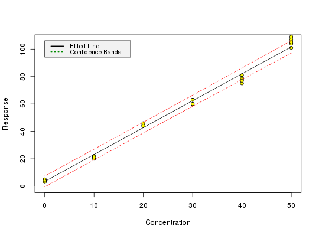

Sample dataset from p. 188 to test the package.
data(massart97ex3)
A dataframe containing 6 levels of x values with 5 observations of y for each level.
Massart, L.M, Vandenginste, B.G.M., Buydens, L.M.C., De Jong, S., Lewi, P.J., Smeyers-Verbeke, J. (1997) Handbook of Chemometrics and Qualimetrics: Part A, Chapter 8.
data(massart97ex3) attach(massart97ex3)#> #> #>yx <- split(y, x) ybar <- sapply(yx, mean) s <- round(sapply(yx, sd), digits = 2) w <- round(1 / (s^2), digits = 3) weights <- w[factor(x)] m <- lm(y ~ x, w = weights) calplot(m)#> Warning: Assuming constant prediction variance even though model fit is weighted#> $Prediction #> [1] 5.865367 #> #> $`Standard Error` #> [1] 0.8926109 #> #> $Confidence #> [1] 2.478285 #> #> $`Confidence Limits` #> [1] 3.387082 8.343652 #>#> $Prediction #> [1] 44.06025 #> #> $`Standard Error` #> [1] 2.829162 #> #> $Confidence #> [1] 7.855012 #> #> $`Confidence Limits` #> [1] 36.20523 51.91526 #># The LOD is only calculated for models from unweighted regression # with this version of chemCal m0 <- lm(y ~ x) lod(m0)#> $x #> [1] 5.407085 #> #> $y #> 1 #> 13.63911 #>#> $x #> [1] 13.97764 #> #> $y #> 1 #> 30.6235 #># For calculating the limit of quantification from a model from weighted # regression, we need to supply weights, internally used for inverse.predict # If we are not using a variance function, we can use the weight from # the above example as a first approximation (x = 15 is close to our # loq approx 14 from above). loq(m, w.loq = 1.67)#> $x #> [1] 7.346195 #> #> $y #> 1 #> 17.90777 #># The weight for the loq should therefore be derived at x = 7.3 instead # of 15, but the graphical procedure of Massart (p. 201) to derive the # variances on which the weights are based is quite inaccurate anyway.